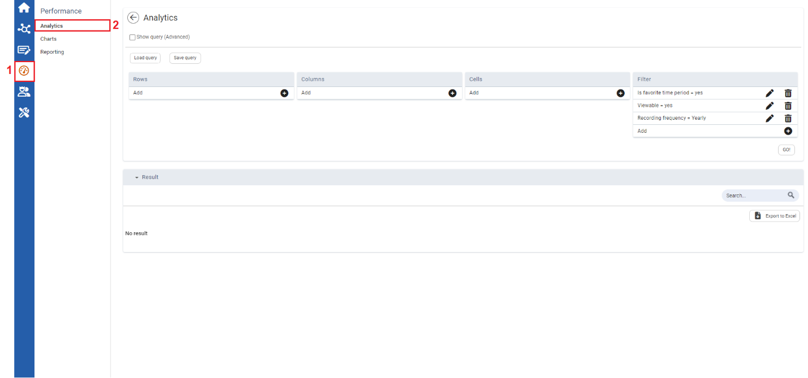
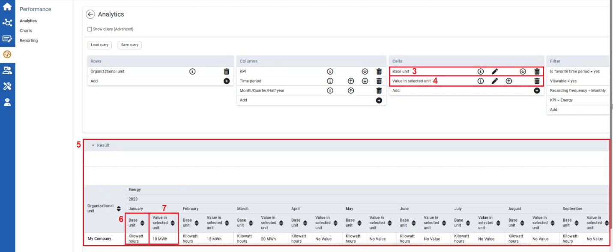

For analytic queries, values entered by users can be automatically viewed in the converted base unit configured in the solution. To view the value entered in the measurement of unit that was originally inputted by the user, the “Value in Selected Unit” cell can be added to the Analytics query.
Users can conduct internal audits, perform consistency and plausibility checks, and ensure data is validated easily before it is used in downstream reporting or decision making.
To Add “Value in Selected Unit” Cell to Analytic Queries

| 1 | On the left navigational panel, click the Performance icon. The Performance menu appears. |
| 2 | Click Analytics. The Analytics window appears. |

| 3 | In the Cell Parameters section, ensure the “Base Unit” cell is added. This step is optional. It gives background information on the base unit. |
| 4 | In the Cell Parameters section, ensure the “Value in selected unit” is added. To add the Value in selected unit cell, click the Plus icon. The Select window opens, select the cell value to include, and then click Save. |
| 5 | Results of the Analytic queries appears. |
| 6 | The Base unit is displayed in the Results section. In this example in Kilowatt-hours. |
| 7 | The Value in selected unit is displayed in the Results section. In this example in Megawatt-hours. |